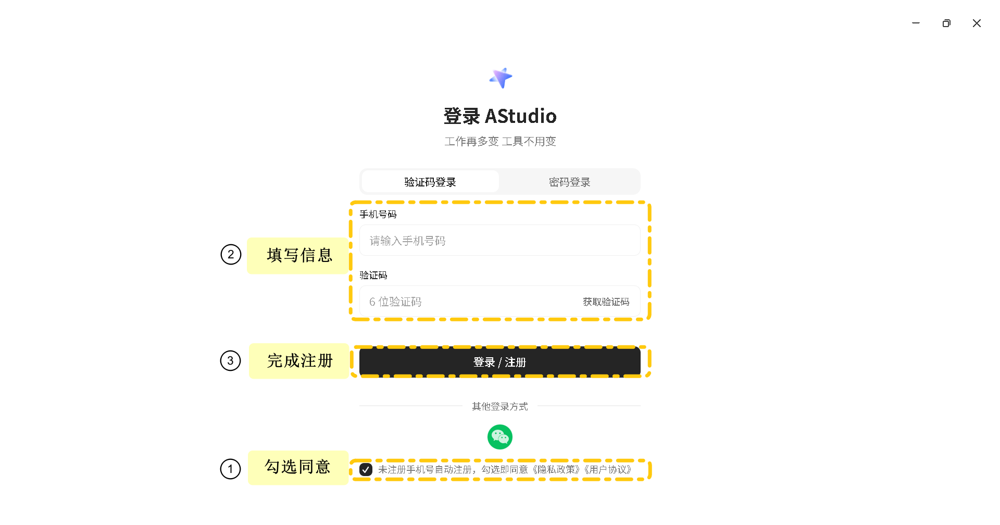
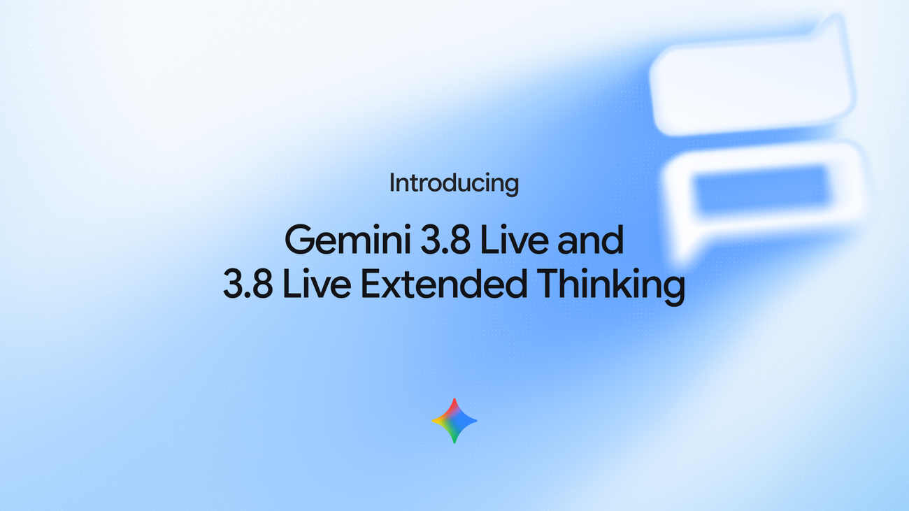
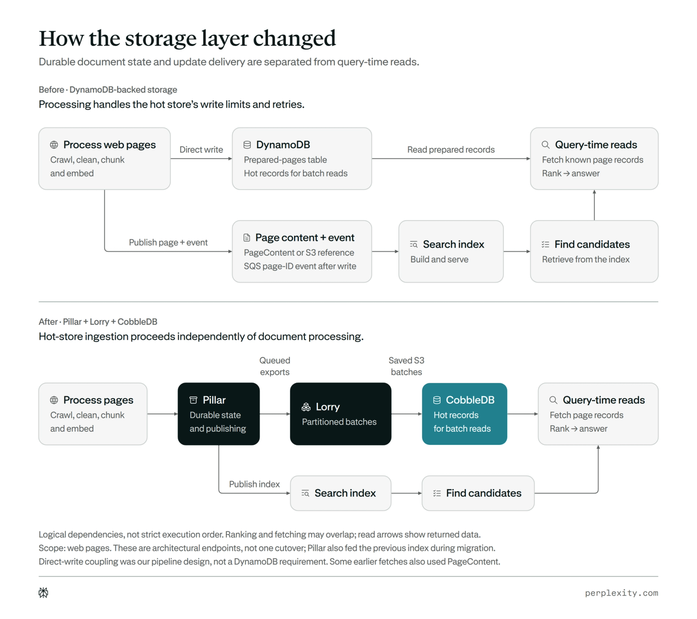
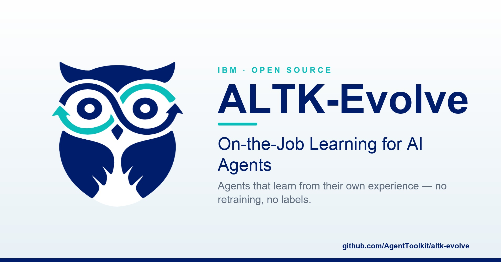

AI Intelligence Daily · 2026-09-16
专栏一｜新闻
1. 飞书 8.0 + 豆包工作伙伴：Agent 进群、独立组织身份
事实
飞书发布 8.0，称面向 Agent 系统性重构：开放平台数据与工具；Agent 可入群并调用文档/表格/日程/会议/审批等；CLI 功能点自 3 月约 247 增至约 767。同步发布「豆包工作伙伴」团队智能体：独立身份、权限与记忆，企业统一配置，定向共创逐步开放。大会站 future.feishu.cn。
判断
协作套件把 Agent Identity + 组织 ACL + 团队 Memory 做成正式产品边界——智能体互联网与 Work Runtime 的强样本。
2. 讯飞 AStudio：星火 X2.5 + ACode Harness 桌面客户端
事实
科大讯飞发布桌面 AI 生产力平台 AStudio：ACode Harness、本地文件/终端/Git、Skill/插件、权限审批与定时自动化；Win/macOS 体验版可自 agent.xfyun.cn 下载。公开披露约 17:33；指南资产时间戳提示或有更早软上线。
判断
国内 Desktop Work Agent 供给继续加密，Harness 命名与本地 Workspace 直接对标自有引擎。

3. Gemini 3.8 Live / Extended Thinking：语音 Agent + 后台工具
事实
Google 发布 Gemini 3.8 Live 与 Live Extended Thinking：近实时视觉、97 语种、后台工具调用不中断对话；分档进入 API/AI Studio、Search Live、Gemini Live 与 Workspace。音频 SynthID 水印。
判断
语音成为可生产的 Live Agent 控制面——对话与工具异步解耦是 Runtime 级信号。

4. HP ZBook 预装 Perplexity Computer + Autodesk Revit MCP
事实
HP 宣布 ZBook Ultra G3a（预计 10 月上市）预装 Perplexity Computer，支持 Portable Computer 本机模式，并经 MCP 连接 Autodesk Revit；另有 HP 客户专属 Skills。承接 9/14 Windows Portable Computer GA。
判断
本机 Computer 进入 OEM SKU + 垂直 MCP——本地 Runtime 成为工作站卖点。
5. Perplexity CobbleDB：两工程师 + 数百 coding agents
事实
Perplexity 公开 CobbleDB（搜索 KV 热存）工程文：batch-read 中位延迟约 31.4→5.60 ms，相对 DynamoDB 成本模型至少约 20% 节省；称两名工程师与数百常驻 AI agents 约两月建成核心（约 4 万行 Rust）。官方 X 于 9/15 20:16Z 放大（落在本统计窗）。
判断
多 Agent 工程劳动力进入可核验 shipping 叙事——Cloud Agent / swarm 运营的硬样本。

6. Cline Desktop beta（补报）
事实
Cline 发布开源桌面应用（Mac/Windows beta）：并行会话、cron Schedule、Marketplace（plugins/MCP/skills）、可从 Claude Code/Codex 导入任务后换模型继续。
判断
开放 harness 桌面壳 + 跨 Agent 会话迁移，是 Work Agent 产品形态的清晰对照物。
7. Claude Mods（Function Hooks）产品化承诺
事实
Claude Code issue #91870 确认 Function Hooks 将以「Claude Mods」之名在数周尺度交付；开放内置 mods 源码与 CLAUDE_CODE_ENABLE_FUNCTION_HOOKS=1 预览。未见 Newsroom GA。
判断
Harness 插件面走向类型化中间件 + 可撤销能力——Trust/Plugin 控制面升级信号。
8. Agent 一致性评测：ALTK-Evolve Pass^k
事实
HF/IBM Research 文指出 Mean@k 与 Pass^k 的一致性缺口，并开源 Consistency Analyzer / guidelines（altk-evolve）。
判断
企业 Agent SLA 应同时看「平均能过」与「反复可靠」。

专栏二｜话题热议
T1 国内：飞书 Agent 一等公民 + 讯飞桌面 AStudio 同日共振，与豆包 SAEP 形成手机/IM/桌面三线对照。
T2 Gemini Live：HN 约 263p；官方 X 高曝光。
T3 CobbleDB agents：「数百常驻 coding agents」叙事引发工程可复现讨论。
T4 System One/Jev：HN 约 642p，早期主张，仅雷达不抬 A。
T5 Pace：本窗无新合同。
专栏三｜开源雷达
cline/cline★≈68130，Desktop beta 活跃HarnessRouter/harnessrouter★≈1436，持续推送modelcontextprotocol/modelcontextprotocol★≈9219AgentToolkit/altk-evolve★≈108，随博文联动
趋势与吸收
组织身份 Agent、OEM 本机 Computer、语音 Live Agent、多 Agent 工程劳动力、Harness 中间件插件——五条线同窗并行。
智能体互联网：组织级主体、垂直 MCP 出厂化、Mods 能力撤销。
Work·Agent 引擎：桌面 Harness 最小可卖集合、对话/工具异步、swarm+人类门禁、Pass^k。
价格 / 订阅
ZBook 定价未公布（预计 10 月）；AStudio 体验版积分叙事；Gemini Live 分档订阅；未见其他重要 API 调价。